Soru 1Cevap: E
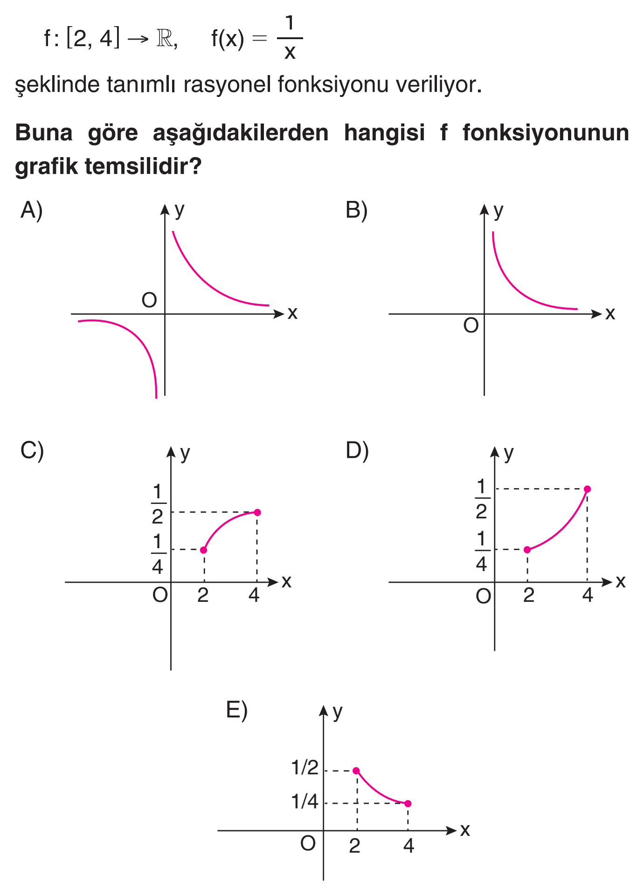
Çözüm
- $f(2)=\dfrac12$, $f(4)=\dfrac14$.
- $x\gt0$ için $\dfrac1x$ azalan.
- $\left(2,\dfrac12\right)$'den $\left(4,\dfrac14\right)$'e inen parça E.
Cevap: E
Soru 2Cevap: D
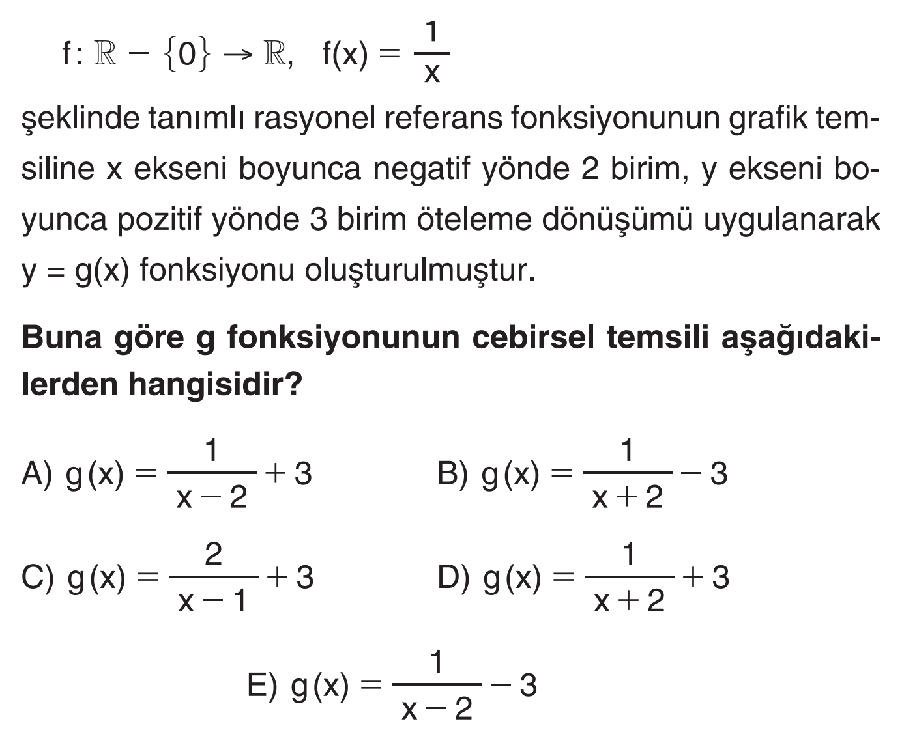
Çözüm
- $x$ ekseni boyunca negatif yönde 2 birim: $\dfrac1{x+2}$.
- $y$ ekseni boyunca pozitif yönde 3 birim: $+3$.
- $g(x)=\dfrac1{x+2}+3$ (D).
Cevap: D
Soru 3Cevap: E
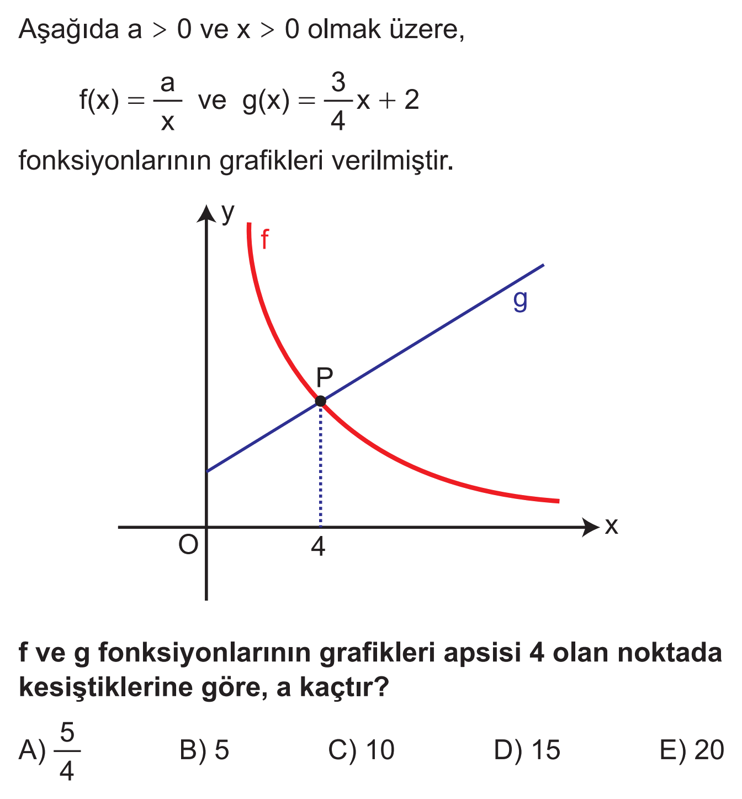
Çözüm
- İki grafik $x=4$'te kesişiyor: $f(4)=g(4)$.
- $g(4)=\dfrac34\cdot4+2=5$.
- $\dfrac a4=5\Rightarrow a=20$ (E).
Cevap: E
Soru 4Cevap: C
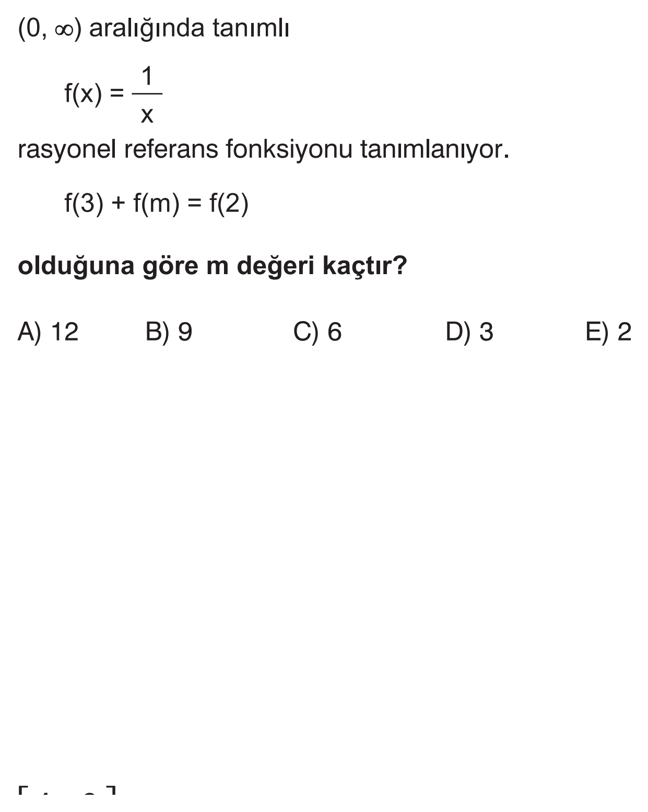
Çözüm
- $\dfrac13+\dfrac1m=\dfrac12$.
- $\dfrac1m=\dfrac12-\dfrac13=\dfrac16$.
- $m=6$ (C).
Cevap: C
Soru 5Cevap: A
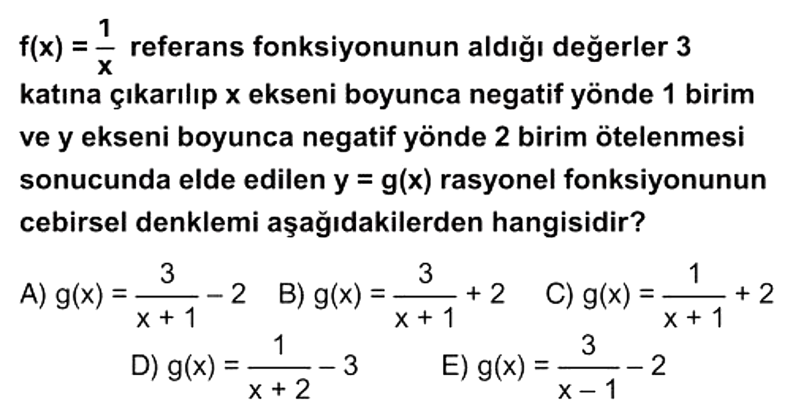
Çözüm
- Değerlerin 3 katı: $\dfrac3x$.
- 1 birim sola: $\dfrac3{x+1}$; 2 birim aşağı: $-2$.
- $g(x)=\dfrac3{x+1}-2$ (A).
Cevap: A
Soru 6Cevap: B
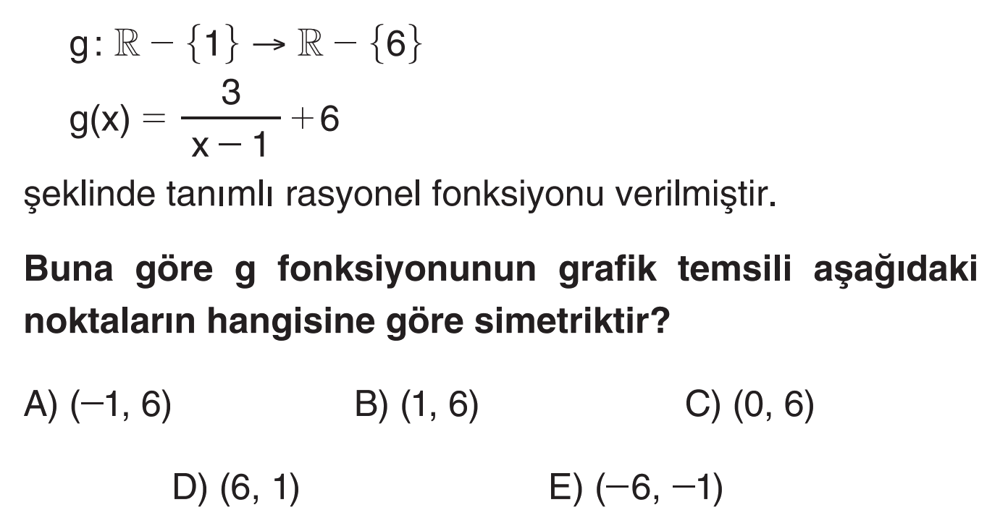
Çözüm
- Asimptotlar $x=1$ ve $y=6$.
- Rasyonel fonksiyonun grafiği asimptotların kesim noktasına göre simetriktir.
- Simetri merkezi $(1,6)$ (B).
Cevap: B
Soru 7Cevap: A
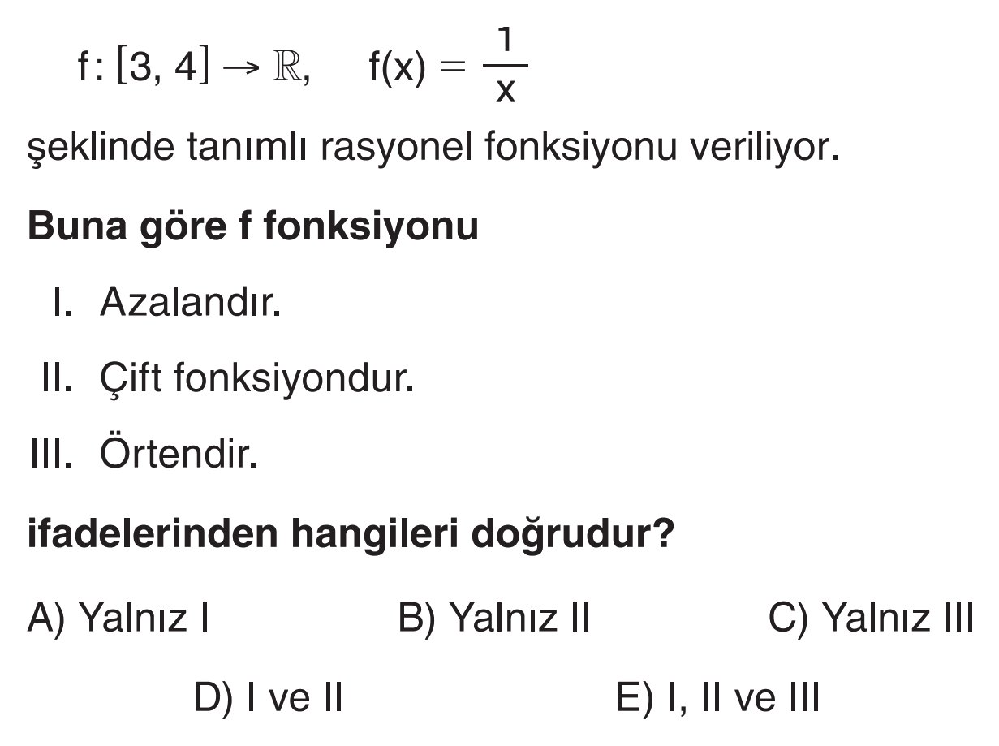
Çözüm
- $[3,4]$'te $\dfrac1x$ azalan (I doğru).
- Tanım kümesi $0$'a göre simetrik değil: çift değil (II yanlış).
- Görüntü $\left[\dfrac14,\dfrac13\right]\ne\mathbb R$: örten değil (III yanlış). Cevap A.
Cevap: A
Soru 8Cevap: D
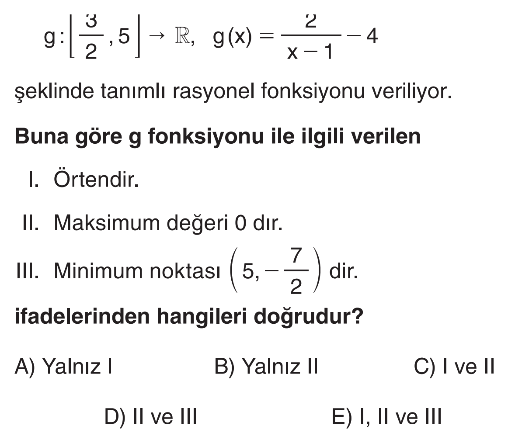
Çözüm
- $g\left(\dfrac32\right)=4-4=0$, $g(5)=\dfrac12-4=-\dfrac72$; $g$ azalan.
- Görüntü $\left[-\dfrac72,0\right]\ne\mathbb R$: örten değil (I yanlış).
- Maksimum değer $0$ (II), minimum noktası $\left(5,-\dfrac72\right)$ (III). Cevap D.
Cevap: D
Soru 9Cevap: E
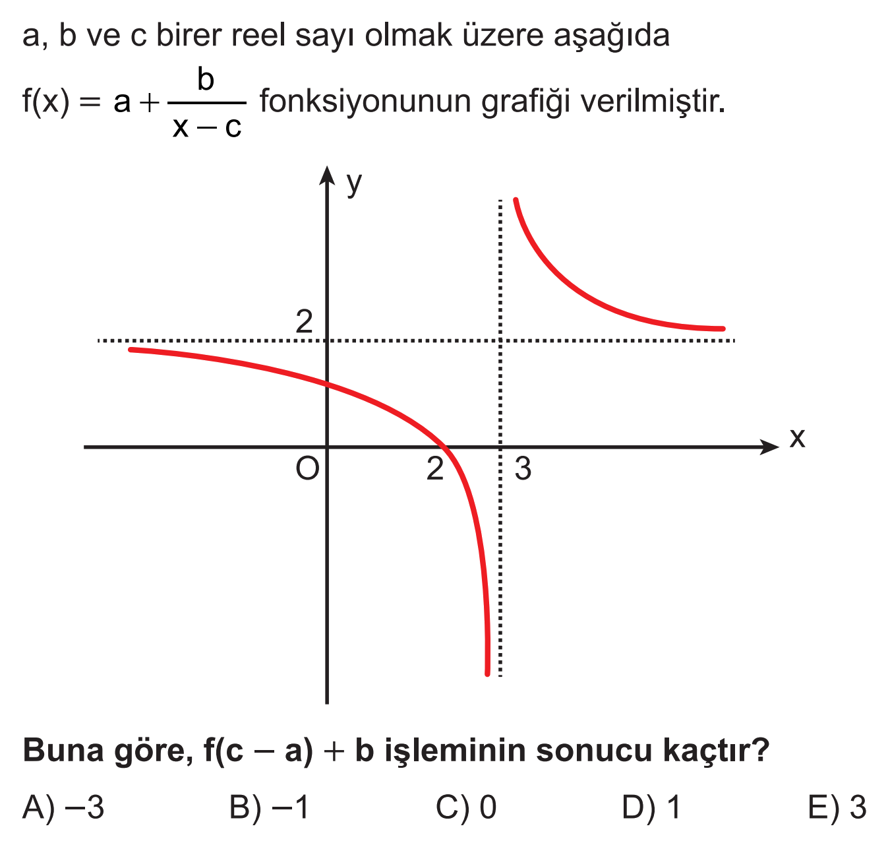
Çözüm
- Asimptotlar $x=3$, $y=2$: $c=3$, $a=2$.
- $f(2)=0\Rightarrow 2+\dfrac b{-1}=0\Rightarrow b=2$.
- $f(c-a)+b=f(1)+2=2-1+2=3$ (E).
Cevap: E
Soru 10Cevap: E
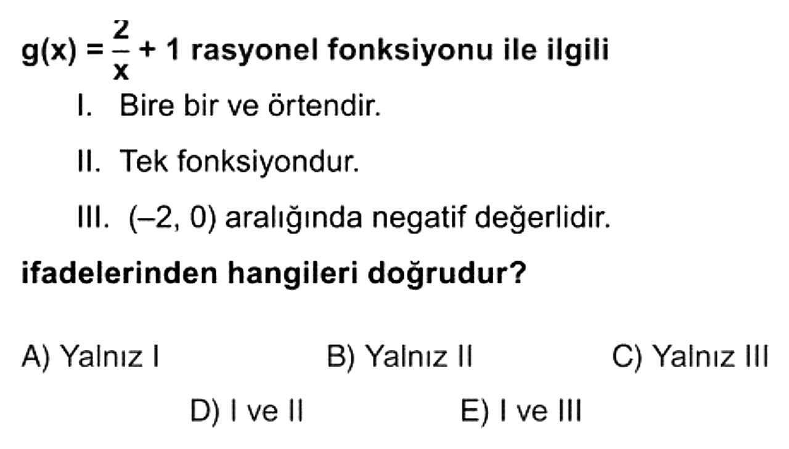
Çözüm
- $\dfrac2x\ne0$: görüntü $\mathbb R-\{1\}$; $\mathbb R-\{0\}\to\mathbb R-\{1\}$ bire bir ve örten (I).
- $g(-x)=-\dfrac2x+1\ne-g(x)$: tek değil (II).
- $\dfrac2x+1\lt0\Rightarrow-2\lt x\lt0$ (III). Cevap E.
Cevap: E
Soru 11Cevap: C
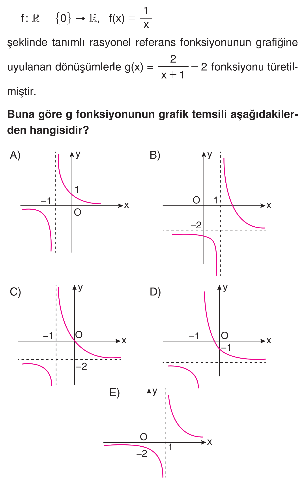
Çözüm
- $\dfrac2{x+1}-2$: dikey asimptot $x=-1$, yatay asimptot $y=-2$.
- $g(0)=2-2=0$: grafik orijinden geçer.
- Pay pozitif, kollar asimptotlara göre sağ üst ve sol altta: C.
Cevap: C
Soru 12Cevap: B
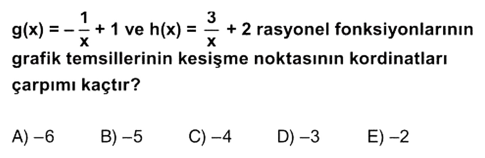
Çözüm
- $-\dfrac1x+1=\dfrac3x+2\Rightarrow-\dfrac4x=1\Rightarrow x=-4$.
- $y=\dfrac14+1=\dfrac54$.
- Çarpım $-4\cdot\dfrac54=-5$ (B).
Cevap: B
Soru 13Cevap: D
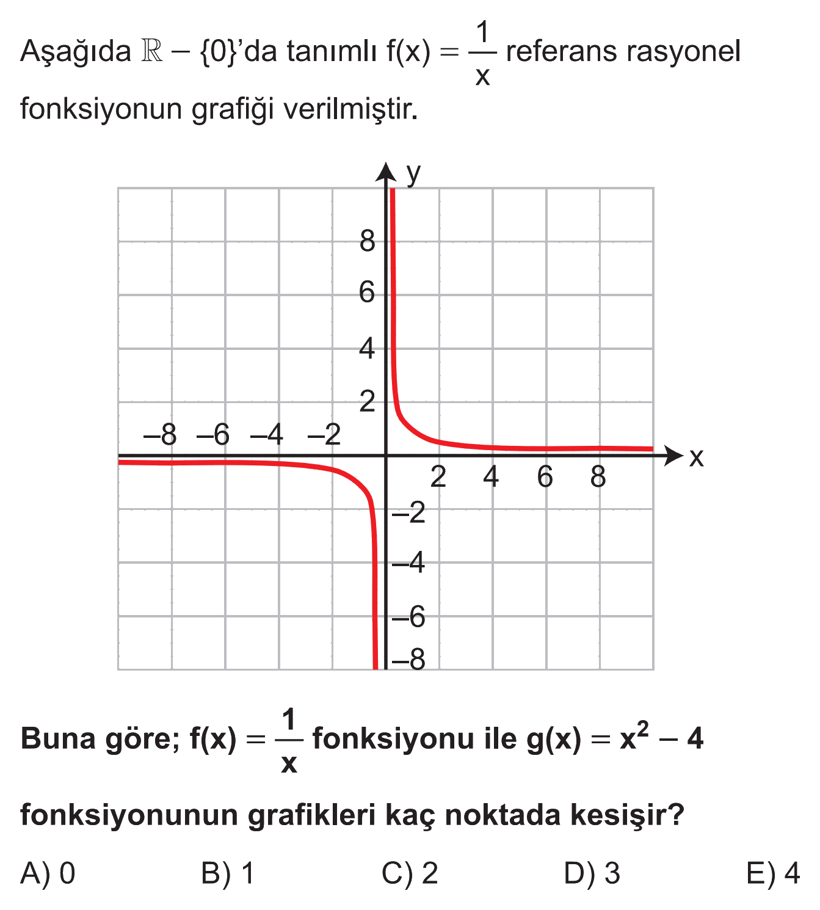
Çözüm
- $g(x)=x^2-4$ parabolünün tepe noktası $(0,-4)$, kökleri $\pm2$.
- III. bölgede $\dfrac1x$'in kolu parabolü iki noktada keser ($x\approx-2$ ve $x\approx-0{,}25$ civarı).
- I. bölgede bir kez daha kesişir ($x\gt2$): toplam $3$ nokta (D).
Cevap: D
Soru 14Cevap: C
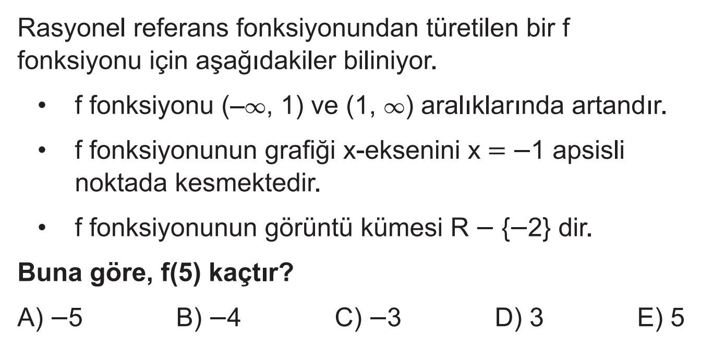
Çözüm
- Dikey asimptot $x=1$, görüntü $\mathbb R-\{-2\}$: $f(x)=\dfrac a{x-1}-2$; artan olduğu için $a\lt0$.
- $f(-1)=0\Rightarrow\dfrac a{-2}-2=0\Rightarrow a=-4$.
- $f(5)=\dfrac{-4}4-2=-3$ (C).
Cevap: C
Soru 15Cevap: E
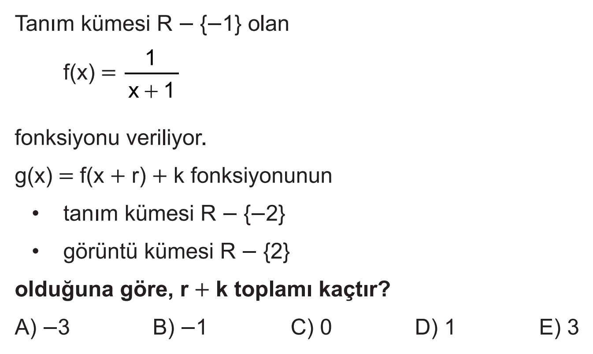
Çözüm
- $g(x)=\dfrac1{x+r+1}+k$; payda $x+r+1\ne0$.
- Tanım kümesi $\mathbb R-\{-2\}$: $-2+r+1=0\Rightarrow r=1$.
- Görüntü $\mathbb R-\{k\}=\mathbb R-\{2\}\Rightarrow k=2$; $r+k=3$ (E).
Cevap: E
Soru 16Cevap: C
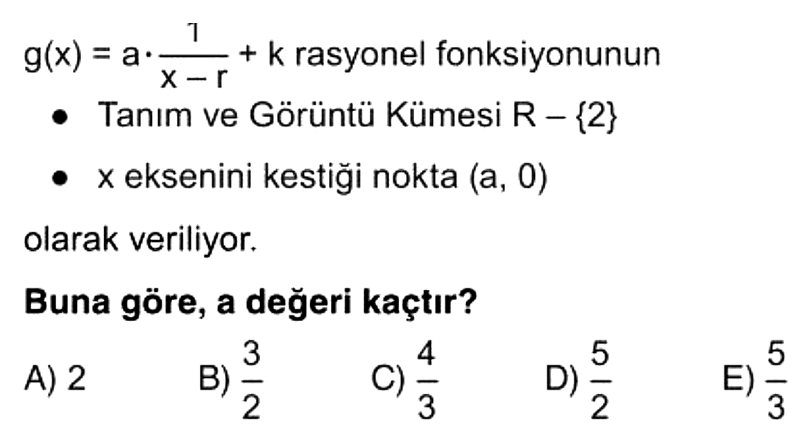
Çözüm
- Tanım $\mathbb R-\{2\}\Rightarrow r=2$; görüntü $\mathbb R-\{2\}\Rightarrow k=2$.
- $x$ eksenini $(a,0)$'da keser: $\dfrac a{a-2}+2=0$.
- $a=-2a+4\Rightarrow a=\dfrac43$ (C).
Cevap: C
Soru 17Cevap: C
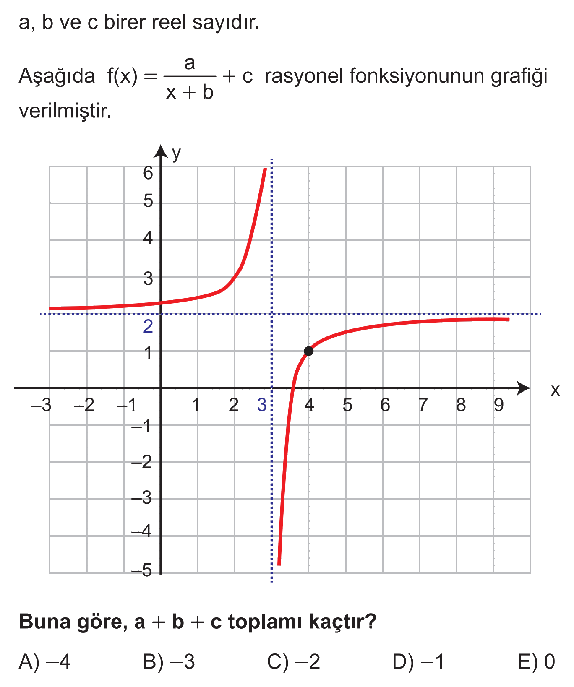
Çözüm
- Dikey asimptot $x=3$: $x+b=0\Rightarrow b=-3$; yatay asimptot $y=2$: $c=2$.
- Grafik $(4,1)$'den geçer: $\dfrac a{4-3}+2=1\Rightarrow a=-1$.
- $a+b+c=-1-3+2=-2$ (C).
Cevap: C
Soru 18Cevap: C
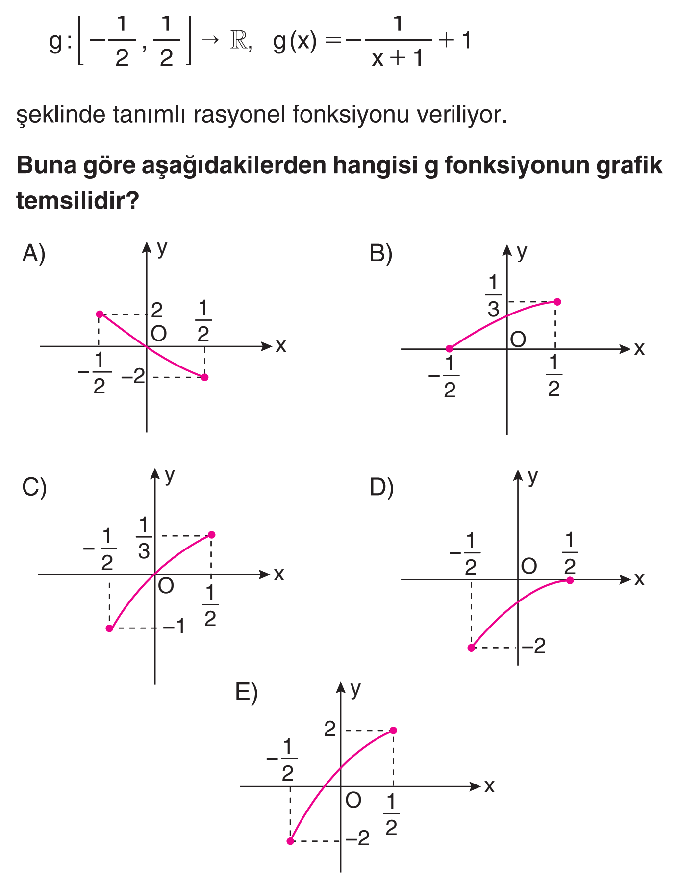
Çözüm
- $g\left(-\dfrac12\right)=-2+1=-1$, $g\left(\dfrac12\right)=-\dfrac23+1=\dfrac13$.
- $-\dfrac1{x+1}$, $x\gt-1$'de artan.
- $\left(-\dfrac12,-1\right)$'den $\left(\dfrac12,\dfrac13\right)$'e yükselen eğri C.
Cevap: C
Soru 19Cevap: B
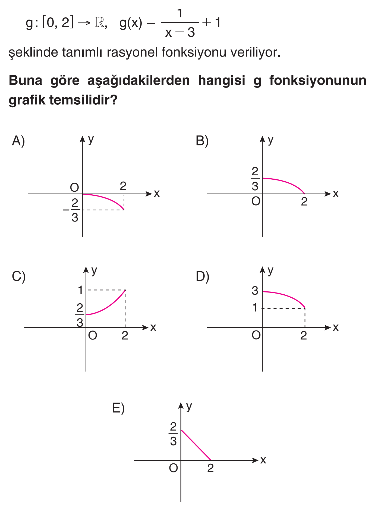
Çözüm
- $g(0)=-\dfrac13+1=\dfrac23$, $g(2)=-1+1=0$.
- $x\lt3$'te $\dfrac1{x-3}$ azalan: $g$ azalan.
- $\left(0,\dfrac23\right)$'ten $(2,0)$'a inen eğri B.
Cevap: B
Soru 20Cevap: E
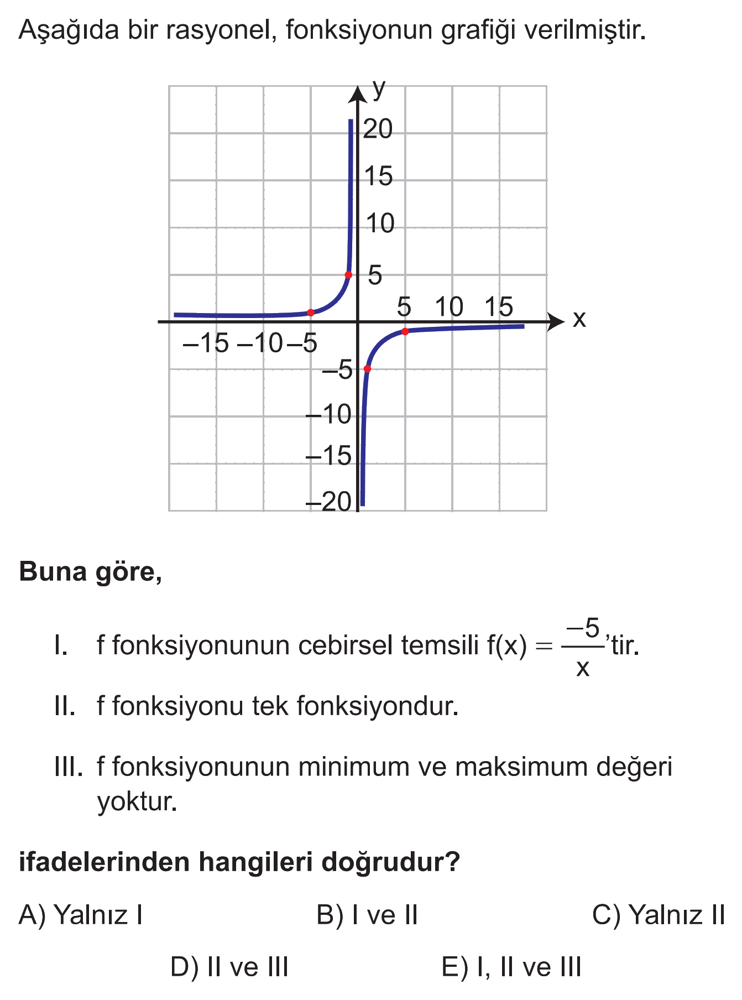
Çözüm
- Grafik $(-1,5)$ ve $(5,-1)$'den geçer, asimptotlar eksenler: $f(x)=\dfrac kx$, $k=-1\cdot5=-5$ (I).
- $f(-x)=\dfrac{-5}{-x}=-f(x)$: tek fonksiyon (II).
- Her iki kol da sınırsız: minimum ve maksimum yok (III). Cevap E.
Cevap: E
Soru 21Cevap: E
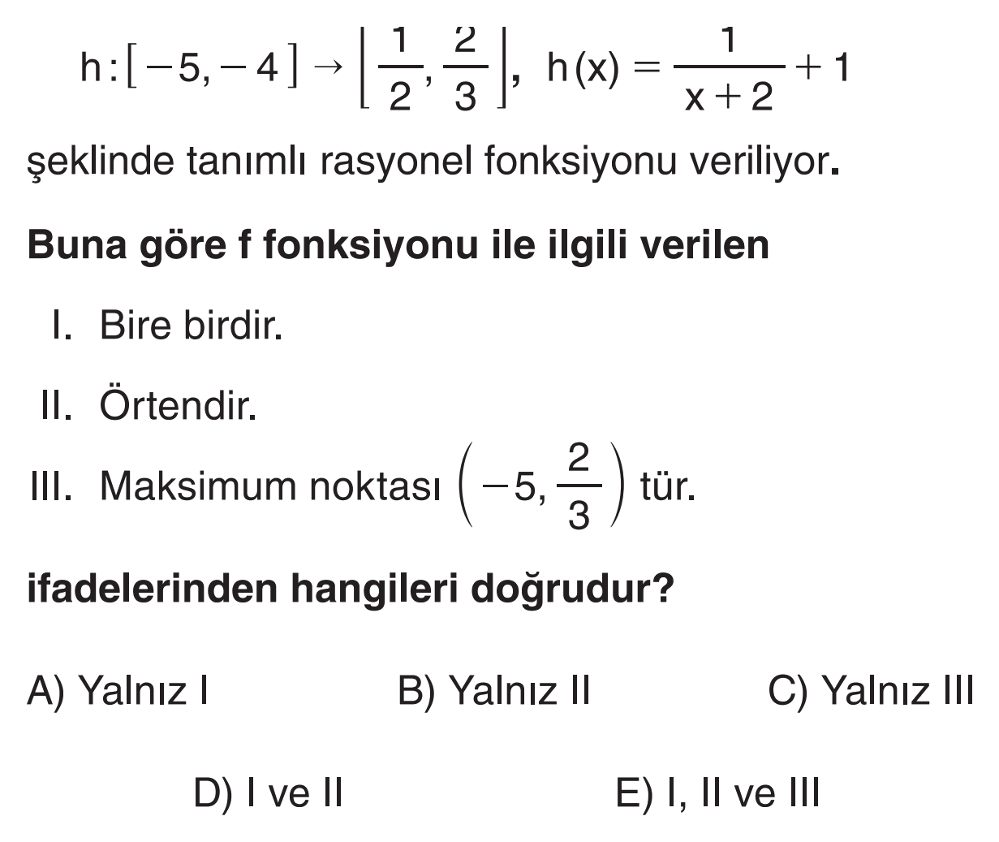
Çözüm
- $h(-5)=-\dfrac13+1=\dfrac23$, $h(-4)=-\dfrac12+1=\dfrac12$; $h$ bu aralıkta azalan: bire bir (I).
- Görüntü $\left[\dfrac12,\dfrac23\right]$ = değer kümesi: örten (II).
- En büyük değer $x=-5$'te: maksimum noktası $\left(-5,\dfrac23\right)$ (III). Cevap E.
Cevap: E
Soru 22Cevap: B
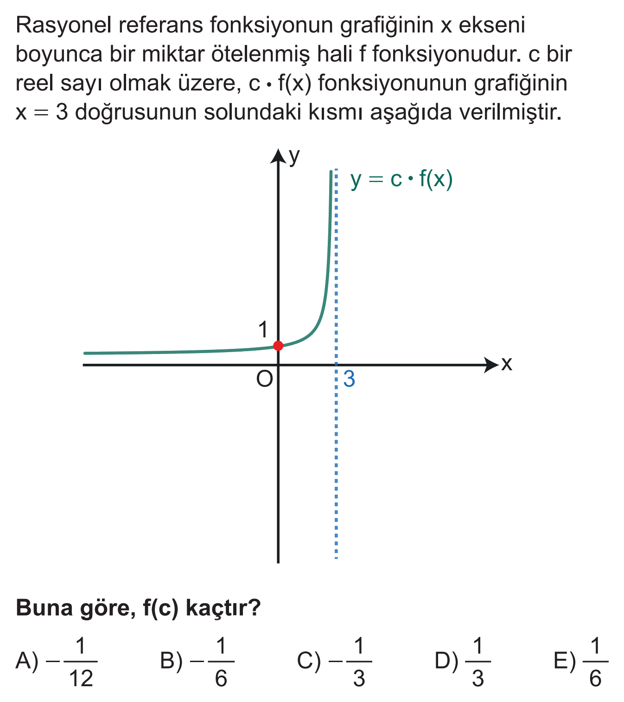
Çözüm
- $f$, $\dfrac1x$'in $x$ ekseni boyunca ötelenmişi; dikey asimptot $x=3$: $f(x)=\dfrac1{x-3}$.
- $c\cdot f(0)=c\cdot\left(-\dfrac13\right)=1\Rightarrow c=-3$.
- $f(c)=f(-3)=\dfrac1{-6}=-\dfrac16$ (B).
Cevap: B
Soru 23Cevap: E
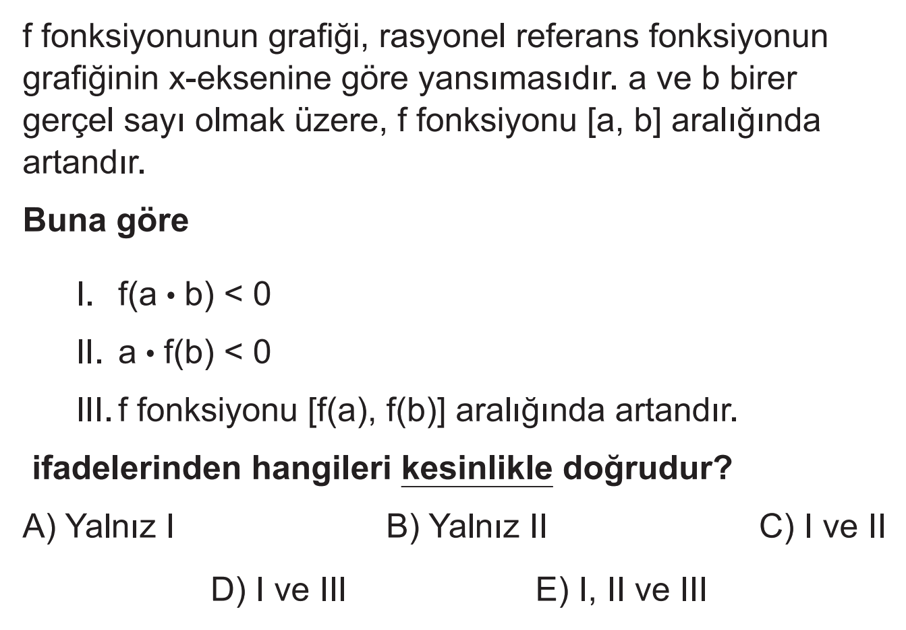
Çözüm
- $f(x)=-\dfrac1x$ yalnız tek bir kolda artandır: $[a,b]$ ya tamamen pozitif ya tamamen negatif, $ab\gt0$; $f(ab)=-\dfrac1{ab}\lt0$ (I).
- $a,b\gt0$ ise $f(b)\lt0$; $a,b\lt0$ ise $f(b)\gt0$: her durumda $a\cdot f(b)\lt0$ (II).
- $f(a)$ ve $f(b)$ de aynı işaretli: $[f(a),f(b)]$ yine tek kolda, $f$ orada artan (III). Cevap E.
Cevap: E
Soru 24Cevap: E
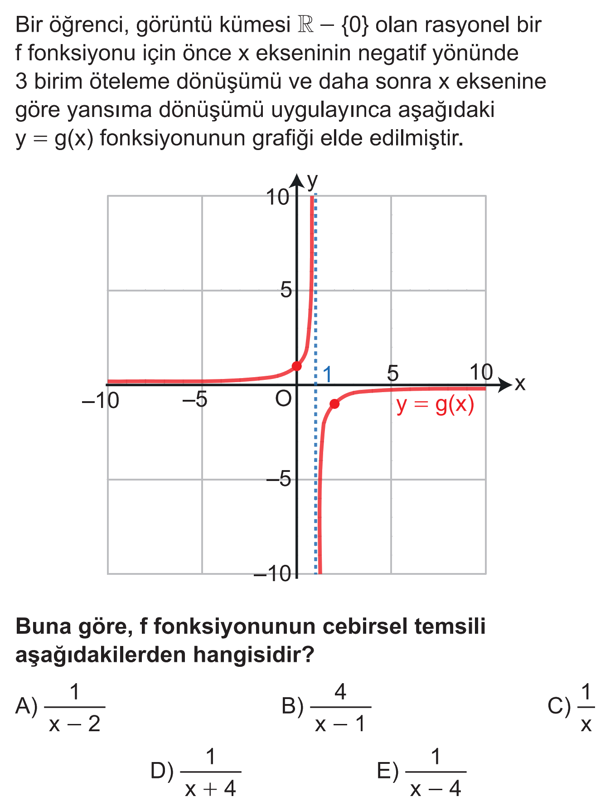
Çözüm
- $g$'nin asimptotları $x=1$, $y=0$ ve $(2,-1)$'den geçiyor: $g(x)=-\dfrac1{x-1}$.
- $g(x)=-f(x+3)\Rightarrow f(x+3)=\dfrac1{x-1}$.
- $x$ yerine $x-3$: $f(x)=\dfrac1{x-4}$ (E).
Cevap: E